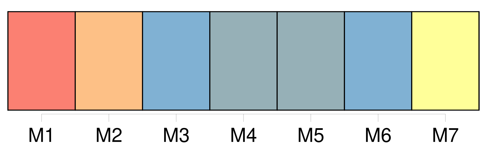
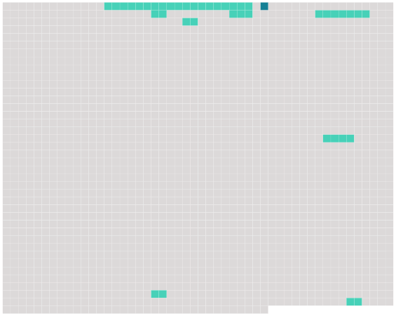

Longueur nb maillons : 9 mentions |
  |
Zèbre [Ils] se trouvent principalement en 3 Afrique centrale et australe. [1 phrases] Bien que 4 la phylogénie des équidés soit peu connue, [ce groupe] est manifestement paraphylétique, c'est-à-dire que si [tous ces animaux] descendent bien d'5 une espèce commune, [toutes les espèces descendantes de celle -ci] ne sont pas que des zèbres.
Il y a aussi des chevaux et des ânes qui sont plus ou moins proches de 2 chacune de [ces espèces] [25 phrases] 109 Ceci conforte la théorie du Dr Debra Kay Bennett selon laquelle [les espèces de zèbres] sont, 110 chacune, plus proche d'111 une espèce de cheval que de 112 ses consœurs car « il suffit d’ 113 une petite modification 114 des relations temporelles des processus qui sous-tendent 115 la formation otif du motif » pour faire apparaître des rayures au lieu de taches. [24 phrases]
245 Systématique [1 phrases]
246 Espèces habituellement citées dans 249 les classifications classiques : • Equus burchellii 250 Gray, 251 1824 ou Zèbre de Burchell ( zèbre des plaines, synonyme du suivant ) • Equus quagga 256 Boddaert, 255 1785 • Equus grevyi 254 Oustalet, 257 1882 • Equus zebra 258 Linnaeus, 259 1758 |
 |
La ressource peut être téléchargée sur la page Ortolang
Si vous avez des questions ou vous voyez des erreurs, merci d'envoyer un mail à silvia.federzoni89@gmail.com
Site développé par S. Federzoni (contact)